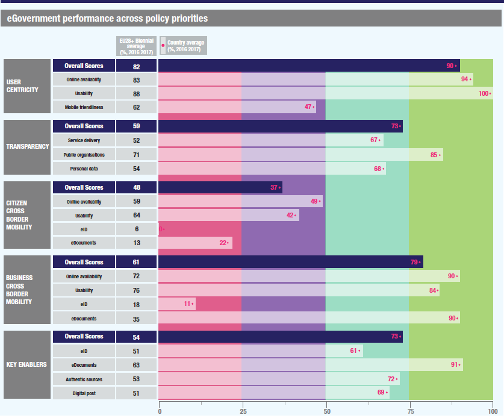
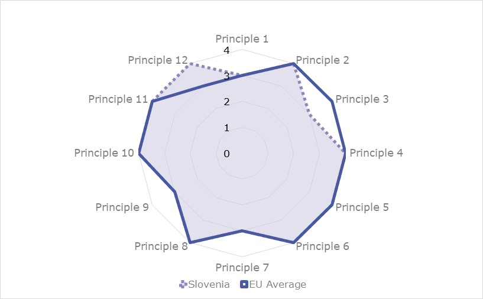
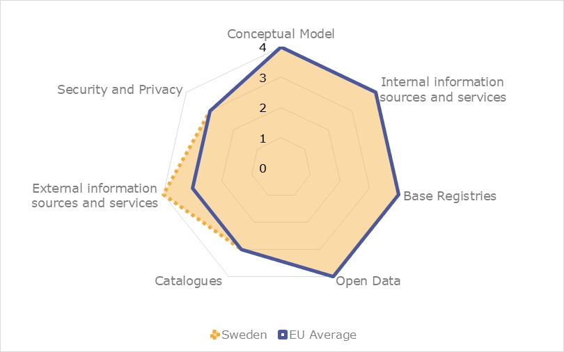

ISA2
Digital Government Factsheet 2019
Spain
ISA2
Digital Government Highlights 6
Digital Government Political Communications 8
Digital Government Legislation 13
Digital Government Governance 18
Digital Government Infrastructure 26
Digital Government Services for Citizens 34
Digital Government Services for Businesses 48
Population: 47 007 367 (2018)
GDP at market prices: 1 208 248 million EUR (2018)
GDP per inhabitant in PPS (Purchasing Power Standard EU 28=100): 92 (2017)
GDP growth rate: 2.2% (2018)
Inflation rate: 1.3% (2018)
Unemployment rate: 14% (2018)
General government gross debt (Percentage of GDP): 97.1% (2017)
General government deficit/surplus (Percentage of GDP): - 2.5% (2017)
Area: 505 990 km2
Capital city: Madrid
Official EU language: Spanish
Currency: Euro
Source: Eurostat (last update: 15 March 2019)
The following graphs present data for the latest eGovernment Indicators for Spain compared to the EU average. Statistical indicators in this section reflect those of Eurostat at the time the Edition is being prepared.
Percentage of individuals using the internet for interacting with public authorities in Spain | Percentage of individuals using the internet for obtaining information from public authorities in Spain | ||
Percentage of individuals using the internet for downloading official forms from public authorities in Spain | Percentage of individuals using the internet for sending filled forms to public authorities in Spain | ||
The graph below is the result of the latest eGovernment Benchmark report, which monitors the development of eGovernment in Europe, based on specific indicators. These indicators are clustered within four main top-level benchmarks:
These top-level benchmarks are measured using a life-events (e.g. mystery shopping) approach. Eight life events are included in the overall eGovernment performance score. Four of these life events were measured in 2013, 2015 and 2017 and the other four were measured in 2012, 2014, 2016, and again in 2018. The life events measured in 2017 were Regular business operations, Moving, Owning and driving a car and Starting a small claims procedure. The life events measured in 2018 are Business start-up, Losing and finding a job, Family life and Studying.

Source: eGovernment Benchmark Report 2018 Country Factsheet
Digital Government Political Communications
The General Secretary for Digital Administration developed a new strategic reference according with European policies in the field of digital government and ICT (standards policy, interoperability, building blocks, cloud computing, blockchain and DLTs, artificial intelligence, big data and other emerging trends). The Secretary of State for Digital Advance started a new Digital Strategy for an Intelligent Spain, which, based on the results obtained in the current Digital Agenda for Spain, updated its content and addressed the new challenges that have arisen in recent years.
Regarding Cybersecurity, a new version of the National Cybersecurity Strategy was published. This strategy took into consideration the last changes in the technological landscape and included provision for the creation of a National Cybersecurity Forum to foster collaboration between public and private entities.
The Central Administration is developing the Fourth National Action Plan (2019-2021), taking into account contributions from public administrations, citizens and other agents of civil society.
In March 2019, the Ministry for Science, Innovation and Universities published a Spanish RDI Strategy in Artificial Intelligence.
Digital Government Legislation
In December 2018, the Organic Law 3/2018, of December 5, on Protection of Personal Data and Guarantee of Digital Rights was adopted. This legal act adapted the Spanish legal system to Regulation (EU) 2016/679 of the European Parliament and of the Council of 27 April 2016 on the protection of natural persons with regard to the processing of personal data and on the free movement of such data, and repealing Directive 95/46/EC (General Data Protection Regulation).
On 7 November, the notification of the DNIe as a Spanish identification system according to the eIDAS Regulation was published in the Official Gazette of the European Union.
In September 2018, the Royal Decree 1112/2018, of 7 September, on the accessibility of websites and mobile applications of the public sector, was approved.
In September 2018, the Royal Decree-Law 12/2018, of 7 September, on the security of networks and information systems, was adopted. It transposed the Directive (EU)
2016/1148 of the European Parliament and of the Council of 6 July 2016 concerning measures for a high common level of security of network and information systems across the Union, known as the NIS Directive.
Digital Government Governance
The General Secretary for Digital Administration (acronym SGAD), with the rank of Undersecretary, is the governing body under the authority of the Secretary of State of Civil Service, as detailed by the Royal Decree 863/2018 of 13 July, responsible for the direction, coordination and execution of the powers attributed to the Ministry of Territorial Policy and Civil Service in terms of digital administration, rationalisation of information technologies and communications in the field of the General Administration of the State and its Public Organisms, and in charge of the operation of the Common ICT Services.
In June, the Royal Decree 355/2018, of 6 June 2018 on Restructuration of Ministries, was released. This Royal Decree developed the basic structure of the ministerial departments. The General Secretary of Digital Administration now depends on the Ministry of Territorial Policy and Civil Service.
Digital Government Infrastructure
In February 2019, the service for eInvoicing FACe incorporated the European invoice formats UBL 2.1 and CII (Cross Industry Invoice) in accordance with Directive 2014/55/EU. Improvements in FACe were developed in collaboration with public and private organisations in the frame of the Project CEF-Telecom EUROFACE. Administration providers can use either the native format Facturae, or European formats UBL 2.1 and CII, to submit invoices electronically and track them through the portal, knowing at all times their status of process.
In April 2019, the recommended Scheme of Common Metadata applicable to electronic administrative documents was approved.
Public eServices provided by four Spanish local and regional administrations (Junta de Extremadura, Diputación de Ciudad Real, Diputación de València and Ayuntamiento de Rivas Vaciamadrid) worked under the EID4Spain project to connect to the Spanish eIDAS node via CL@VE 2.0, in order to enable cross-border authentication in line with the eIDAS Regulation.
Digital Government Services for Citizens and Businesses
Significant progress was reported in the area of health. Since January 2019, the Department of Health of the Generalitat of Catalonia launched a new service that made it possible for interoperable reports of its population to be accessible the rest of the National Health System (NHS). This made it possible for Catalan medical professionals to access such reports from other autonomous communities.
With the activation of this service in Catalonia, an important milestone was achieved with the completion of the implementation map of interoperable clinical information. This meant that 94.64% of the population was now covered by the National Health System.
ICT Strategic Plan for the Period 2021-2014
The Digital Transformation Plan for the General Administration and its Public Agencies (ICT Strategy 2015-2020) is still in force. However, in order to anticipate the needs and expectations of citizens and businesses, public administrations and associated entities and private sector, in the following year the General Secretariat for Digital Administration will develop a new strategic plan according with European policies in the field of digital government and ICT targeting the period 2021 to 2014 (standards policy, interoperability, building blocks, cloud computing, blockchain and DLTs, artificial intelligence, big data and other emerging trends).
Issues to be considered include the following: a governance model consolidating SGAD’S Coordinating role in ICT; a consolidated model of data centric organisation; a reflection and innovation of the current platforms and common infrastructures; a study of the possibilities of emerging technologies; a training plan for public employees in the skills that the future requires. It would seek to improve weaknesses reflected in the eGovernment Benchmarking: mobile friendliness; citizens and cross border mobility; accountability.
In particular, Spain requested support for this ICT Strategic Plan to the European Commission within the framework of the Structural Reform Support Service (SRSS). The terms of the contract, which were being co-produced (the procurement will be carried out by the Commission), formed the basis for the delivery of the next Spanish ICT Strategic Plan.
Digital Transformation Plan for the General Administration and Public Agencies (ICT Strategy 2015-2020)
The Digital Transformation Plan of the State Administration was approved by the Government of Spain in 2015 and set the ICT Strategy to be followed by all the Ministries of the General State Administration. The different ministries drafted their sectorial action plans for the digital transformation to be carried out in their areas.
The Secretary of State for Digital Advance started a new Digital Strategy for an Intelligent Spain, which, based on the results obtained in the current Digital Agenda for Spain, updated its content and addressed the new challenges that have arisen in recent years. Public consultations for the Digital Strategy for an Intelligent Spain were finalised. More information is available here.
Fourth National Action Plan for Open Government
The Central Administration is developing the Fourth National Action Plan (2019-2021), taking into account contributions from public administrations, citizens and other agents of civil society.
The general objectives of the Fourth National Action Plan are to:
As in the Third National Action Plan (2017-2019), the result of Spain’s participation in the Open Government Partnership (OGP), the new Plan also counted on the participation of the different public administrations and of the civil society, maximising their contribution through a collective debate addressing its conception and development.
The Digital Transformation Plan for the General Administration and its Public Agencies
The Digital Transformation Plan for the General Administration and its Public Agencies (ICT Strategy 2015-2020) stated that all digital services of the Central State Administration must have a common system of eIdentification through shared keys.
Following this line of action, the Spanish government incorporated Cl@ve in all digital services that need eIdentification for public administration. As a result, more than 7 400 organisms adopted Cl@ve, with an increment of more than 1 000 in 2018.
Moreover, in 2018 the DNIe was notified to the European Commission, compiling with the eIDAS Regulation.
National Cybersecurity Strategy
The National Security Strategy 2017, adopted by the Government in the Council of Ministers on 1 December 2017, was the first one developed in accordance with Law 36/2015 on National Security.
The National Security Council approved a new version of the National Cybersecurity Strategy that developed the National Security Strategy 2017. The strategy took into consideration changes in the technological landscape and included provision for the creation of a National Cybersecurity Forum to foster the collaboration of public and private entities.
The strategy’s five objectives included:
Digital Transformation Plan for the General Administration
The first line of action (making the internal management processes of administrative units digital) of the Digital Transformation Plan for the General Administration, promotes the increase in productivity and efficiency in the Administration using new technologies in the internal procedures of administrative units.
This line includes measures to enable public consultation via electronic access and ensure semantic interoperability between censuses (primary registers held in the Administration), previous inventory protecting the proprietary nature of the data, and the disclosure exceptions set forth in the law.
Plan of Ecological Public Procurement of the General Administration of the State
The Spanish government adopted the Plan for Ecological Public Procurement of the General Administration of the State, its autonomous bodies and entities managing social security. The Plan was approved by the Order of Presidency PCI/86/2019 of January 31.
The Plan responded to the need to incorporate ecological criteria in public procurement. This will allow public administrations, in the development of their activities, to promote and contribute to the objectives of economic and environmental sustainability.
Among the main objectives of the Plan are: promoting the acquisition by the public administration of goods, works and services with the least environmental impact; serving as an instrument to promote the Spanish Circular Economy Strategy; guaranteeing a more rational and economic use of public funds; promoting environmental clauses in public procurement; and publicising the possibilities offered by the legal framework of green public procurement.
Action Plans for Digital Transformation
Nine Ministries have so far approved action plans for their digital transformation:
The Action Plan of the Ministry of Defence for digital transformation is the document that includes actions in matters of Digital Administration, Information Technologies and Communications to be developed in the Department as a whole and its associated public bodies. This Plan identifies 12 work areas and, within each one, its current situation, future challenges and actions to achieve them. Furthermore, the Plan for Improving the Quality of ICT Services in Judicial and Fiscal Venues was approved.
The Plan was subdivided into two distinct parts. The first part related to those areas of digital administration that do not affect defence, political consultation, crisis situations and State security, and that do not handle classified information. This part specifically included the services that the Ministry planned to develop, especially those aimed at providing services to citizens and companies, its temporary planning, and the necessary human, technical and financial resources.
The Action Plan for Digital Transformation in the Ministry of Finance was approved. This plan included 10 work lines and affected 33 dependent agencies. It resulted in 183 basic actions:
The Action Plan of the Ministry of Presidency, Relations with the Courts and Equality is a fundamental instrument to promote the transformation in the Ministry and make sustainable the constant process of innovation and improvement in the quality of public services. It included nine action lines with one describing the starting situation, priorities and roadmap to completion.
The Action Plan of the Ministry of Employment, Migration and Social Security was approved in 2018. It configured in three action plans: the developments to comply with Law 39/2015, the changes at the functional level for the adaptation of the procedures and the management of the change in the administrative activity. It was configured in nine lines of action: the digital transformation of the processes, the development of digital public service adapted to new technologies (including electronic notification), the innovation in services, predictive analysis, orientation to open data, the development of the workplace, and policies of security. This included the promotion of electronic notifications along the lines of Providing Digital Public Services Adapted to New Technologies.
The Action Plan of the Ministry of Education and Vocational Training incorporated 94 actions to be carried out during the triennium 2018-2020, in the fields of education, culture and sport.
The Action Plan of the Ministry of Justice was oriented to compliance with Laws 39/2015 and 40/2015, so that electronic processing became the ordinary action modality of public administrations. The Action Plan, which contained 12 action lines, described the current situation, future challenges and the road map to completion.
On the European level, the Ministry of Justice participated in the European Programmes eJustice and eCodex.
The Action Plan of the Ministry of the Interior, approved in 2019, defined the same 10 action lines of the Ministry of the Finance Action Plan.
The Action Plan of the Ministry of Foreign Affairs, European Union and Cooperation included three areas: the department itself and the entities attached to the Department, the Spanish Agency for International Cooperation for Development (AECID) and the Cervantes Institute (IC). Each defined its own measures, with priority given to digital transformation procedures.
Digital Transformation Plan for the General Administration
The first line of action (making the internal management processes of administrative units digital) in the Digital Transformation Plan for the General Administration, promoted productivity and efficiency in the Administration using new technologies within the internal procedures of administrative units.
This line made reference to the review of the National Interoperability Framework, in support of measures for its implementation. Technical interoperability and other standards were drafted to ensure that homogeneous, coordinated solutions were given in the provision of services in eGovernment.
Spanish RDI Strategy in Artificial Intelligence
In March 2019, the Ministry for Science, Innovation and Universities published a Spanish RDI Strategy in Artificial Intelligence.
The Spanish RDI Strategy in Artificial Intelligence is the backbone of a vision of RDI that is key for the development of the European framework. This strategy will be the basis for the future National Artificial Intelligence Strategy, which will allow for the coordination and alignment of national investments and policies. This will result in the improvement of synergies and allow public and private investments to be directed at the motivation of the use of these technologies in our society and economy.
The AI requires new competences in Spanish educational and labour system, so the Government will develop a Map of Current AI Capabilities in Spain, and the launch a Network of Research Nodes in AI. Another priority is to create a computer platform where RDI agents can experiment with developments before their launch and, moreover, contribute from RDI in the drafting of a Code of Ethics for AI.
State Plan for Scientific and Technical Research and Innovation 2017-2020
The 2017-2020 State Plan comprised four state programmes that corresponded to the general objectives established in the Spanish Strategy of Science and Technology and Innovation 2013-2020: promotion of talent and its employability, generation of knowledge and strengthening of the system, leadership business in research and development and innovation (R&D&I) and R&D&I oriented to the challenges of society.
This plan was the main instrument of the General State Administration for the development and achievement of the Objectives of the Spanish Strategy of Science and Technology and Innovation 2013-2020 and the Europe Strategy 2020. It included state aid for R&D&I which was granted through calls under competitive competition.
The actions of the General State Administration in terms of R&D&I have a transversal nature, and one that requires close coordination with sectorial strategies defined by the different ministerial departments. The Strategic Plan in Health and the Strategic Action in Society and Digital Economy are part of the State Plan, to which the Connected Industry 4.0 Strategic Action was also added.
Plan for Promoting Language Technology
Adopted in October 2015, this Plan aimed to promote the development of natural language processing and automatic translation into Spanish and co-official languages.
Law on Common Administrative Procedure of Public Administrations & Law on the Legal Regime of the Public Sector
Government organisations continued their advance in compliance with Law 39/2015, of October 1 2015, on Common Administrative Procedure of Public Administrations, and Law 40/2015, of 1 October 2015, on the Legal Regime of the Public Sector. These laws were published with the goal of reforming the functioning of the government and implementing a fully electronic, interconnected, transparent administration with a clear and simple structure.
Establishment of Electronic Relationships in Administrative Procedures
On 4 September 2018, Royal Decree-law 11/2018 was published in the BOE. It amended several laws. The adaptation of administrative procedures to the new paradigm and the design of optimal management processes required that technological, organisational and legal developments must have the necessary degree of maturity. Hence, the amendment delays until 2 October 2020, for the entry into force of some of the articles of Law 39/2015.
Royal Decree on Accessibility of Websites
In September 2018, the Royal Decree 1112/2018, of 7 September 2018, on the accessibility of websites and mobile applications of the public sector, approved at the proposal of the Ministries of Territorial Policy and Civil Service, Economy and Enterprise and Health, Consumer Affairs and Social Welfare, was adopted.
Order on Electronic Voting
The Order ICT/140/2019, of 14 February 2019, regulated conditions for the exercise of electronic voting in the electoral process for the renewal of the plenary sessions of the Official Chambers of Commerce, Industry, Services and Navigation.
Key enablers
Law on Transparency, Public Access to Information and Good Governance
The Law 19/2013, adopted on 9 December 2013, aimed to expand and strengthen the transparency of public activity, regulate and guarantee the right of access to information concerning the activity, and establish the obligations of good government that must be meet by public officials.
Royal Decree on the Re-Use of Public Sector Information
In October 2011, the Council of Ministers adopted the Royal Decree 1495/2011 of 24 October, implementing the Law 37/2007 on the re-use of public sector information and that implemented the EU Directive 2003/98/EC. Its objective was to establish, at the level of national government, detailed rules developing the provisions of the Law, and promoting and facilitating the availability of public sector information for its re-use both commercially and non-commercially.
Common Administrative Procedure of Public Administrations
The identification and signature systems of citizens to be able to interact with that administrations are included in articles 9 and 10 of Law 39/2015, 1 October 2015, of the Common Administrative Procedure of Public Administrations.
Citizens can choose between different systems of identification (proof of identity), using a certificate, electronic ID or key agreement, based on the use of a key chosen by the user and a PIN communicated by SMS and that requires previous registration.
Resolution of 14 July 2017 of the General Secretariat of Digital Administration regulated the conditions for use of non-cryptographic electronic signatures by citizens and business in their relations with administrative bodies of the Central Administration.
Law on the Protection of Personal Data
The Organic Law 03/2018, of 5 December 2018, on the Protection of Personal Data incorporates new aspects that affect not only citizens, but also the public and private sectors complementing Regulation (EU) 2016/679 of the European Parliament and of the Council, of April 27 2016.
Regarding digital government, Title X contained information about the digital rights and freedoms of Internet environment. These rights included net neutrality and universal access or rights to security and digital education, as well as rights to oblivion, portability and the digital testament. The right to digital disconnection within the framework of the right to privacy in the workplace, and the protection of minors in the Internet along with the guarantee of freedom of expression, and the right to the clarification of information in digital media, were also included in this title.
Organic Law 3/2018 introduced minor amendments to Law 39/2015 of October 1 2015, on Common Administrative Procedure of Public Administrations, that reinforced the role of the National Security Framework on the protection of personal data and facilitated the application of the Once-Only principle.
National Security Framework (ENS)
The National Security Framework, regulated by the Royal Decree 3/2010, covered the basic principles, minimum requirements and security measures to be applied by the public sector within the scope of the new Law 40/2015.
The National Security Framework foresaw a series of so-called Technical Security Instructions, which provided more detailed provisions on: a) reporting on the security status; b) notification of security incidents; c) performing security audits; d) achieving compliance with the National Security Framework; e) acquisition of security products; f) application of cryptography in the National Security Framework; g) achieving interoperability in the National Security Framework; h) security requirements in outsourced environments.
The ENS established the CCN-CERT (attached to the Spanish National Intelligence Centre) as the Spanish Government Computer Security Incident Response Team (CSIRT). Public sector entities in Spain and private sector service providers could be certified against the National Security Framework by independent certification bodies. These certification bodies should be accredited against ISO/IEC 17065 by ENAC (Entidad Nacional de Acreditación – The National Accreditation Entity).
Agreement of the National Security Council
On 10 August 2018, the Order PCI/870/2018 on the Agreement of the National Security Council was published. The order approved the procedure for the preparation of a new National Cybersecurity Strategy that communicated the mandate of the National Security Council. The Order PCI/487/2019, of 26 April, published the National Cybersecurity Strategy 2019, approved by the National Security Council. The order responded to the mandate of the National Security Council of 16 July 2018, published in the BOE of August 10 and established the position of Spain before a new conception of cybersecurity within the framework of the National Security Policy.
In 2018, the Resolution of 27 December 2018, of the Ministry of the Presidency, Relations with the Courts and Equality, was published. It established the Convention on Cybersecurity between the Ministry of Territorial Policy and Civil Service and the National Intelligence Centre. A Cybersecurity Operations Centre was set up for the Ministry of Territorial Policy and Civil Service, which operated as an extension of the future Cybersecurity Operations Centre of the General State Administration (future SOC of the AGE – General Secretary of Digital Administration (SGAD) and National Cryptologic Centre (CCN).
Implementation of Delegated EU Legislation on Technical Requirements for the Management and Maintenance of the Central Electronic Register
Delegated Regulation (EU) 2019/411 of the Commission, of 29 November 2018, transposed the Directive (EU) 2015/2366 of the European Parliament and of the Council. It regarded the technical norms of regulation by the fact that technical requirements were established in the development, management and maintenance of the central electronic registry in the field of payment services and on access to the information contained in the registry.
HFP/633/2017 order
To facilitate the access of citizens to the administration, this regulation was developed to allow citizens to enable third parties to act on their behalf in certain procedures or actions via electronic means before the General State Administration and/or its related public bodies or dependents.
The HFP/633/2017 order approved the models of powers of attorney to be used in the Electronic Registry of Representatives of the Central Administration and in the Electronic Registry of Representatives of Local Entities. The order also regulated valid methods to be used in the electronic signature of powers of attorney.
Law on Public Sector Contracts
The Law 9/2017 on Public Sector Contracts transposed the European Parliament and Council Directives 2014/23/EU and 2014/24/EU of 26 February 2014 into Spanish law. It entered into force on 9 March 2018.
Law on eInvoicing
Law 25/2013 mandated the use of electronic invoices as well as an accounting record of invoices in the public sector. It obliged all public entities to receive all invoices through one common point of entry regardless of their different units and departments. This common point of entry shall be made publicly available.
In accordance with this law, and as from 15 January 2015, all invoices sent to public sector entities must be electronic. They should have a structured format (Facturae V3.2.X) and be signed with an electronic signature based on a qualified certificate.
The law also required all public administrations to have an invoice accounting record which keeps track of all invoices received, unpaid bills, for knowledge of accounting units and the Spanish Tax Agency (AEAT). The use of accounting records became mandatory as of 1 January 2014.
National Interoperability Framework
Interoperability was one of the principles included in Law 40/2015 on Public Legal System. The National Interoperability Framework (Esquema Nacional de Interoperabilidad – ENI), as foreseen in Law 40/2015, and implemented through Royal Decree 4/2010, which was jointly formulated by all public administrations, was developed using the European Interoperability Framework as a reference.
The ENI established the Interoperability Technical Standards that became mandatory for public administrations and that developed specific aspects of interoperability in relations with the citizen. There were twelve Interoperability Technical Standards: catalogue of standards, electronic documents, electronic files, digitisation of documents, electronic signature policies, data intermediation protocols, data models, electronic documents management policy, requirements for the connection to the network of the Spanish public administration, procedures for authentic copies and conversion between formats, data models for the exchange of records between official input/output registries, and reuse of public sector information.
The NIF was created in response to the conditions necessary to guarantee an adequate level of interoperability regarding the technical, semantic and organisational aspects of the systems, and applications used by Public Administrations that allow the exertion of rights and fulfilment of duties through digital access. The main objectives of the NIF included the following:
The NIF of Spain (the ENI) enshrined interoperability across the public sector, from technical rules to tools for interoperability, also covering infrastructures and common services, reuse, recovery and preservation of electronic documents, and electronic signature.
Moreover, a public consultation was made on 23 May 2018, which included the proposal to review the National Interoperability Framework.
Legislation on eJustice
Democracy and the administration of justice are strengthened with the aid of new electronic tools. Citizens have the right to a public service that is agile, transparent, responsible and that fully complies with constitutional values. One of the essential means to achieve this is through the new Judicial Office, whose prime objective is the rationalisation and optimisation of resources that will assist in the Administration of Justice.
Royal Decree 396/2013 of 7 June 2013, regulated the National Technical Committee for the Electronic Administration of Justice.
Order JUS/1126/2015 of 10 June 2015, created the Electronic Judicial Office, the official website that provided electronic access to the Administration of Justice to citizens and professionals.
Law 34/2002 on Information Society Services and Electronic Commerce of 11 July 2002, implemented the EU Directive on certain legal aspects of Information Society services, in particular as they related to electronic commerce contained in the Internal Market (Directive2000/31/EC on ‘electronic commerce’). Law 56/2007 on measures to promote Information Society modified the Law on Information Society Services and Electronic Commerce by establishing an eAccessibility obligation.
Ministry of Territorial Policy and Civil Service
The Ministry of Territorial Policy and Civil Service is in charge and has full responsibility for the eGovernment strategy. It promotes the full incorporation of information technologies and communications for the provision of public services through simplified procedures and processes aimed at the modernisation of the entire sector. The General Secretary for Digital Administration is responsible for functions related to digital administration. It is assisted in the performance of these functions by the necessary administrative and material support of the various ministerial departments.
In the wake of the implementation of Royal Decree 355/2018, ministerial departments were restructured and the General Secretary of Digital Administration became part of the Ministry of Territorial Policy and Civil Service.
Luis Planas Puchades Acting Minister of Territorial Policy and Civil Service Contact details: Ministry of Territorial Policy and Civil Service Paseo de la Castellana, 3 28071 Madrid Tel.: +34 91 2739000 E-mail: N/A Source: http://www.mptfp.gob.es/portal/ministerio.html |
 | José Antonio Benedicto Iruiñ State Secretary of Civil Service Contact details: Ministry of Territorial Policy and Civil Service Paseo de la Castellana, 3 28071 Madrid Tel.: +34 91 2739000 E-mail: N/A Source: http://transparencia.gob.es/servicios-buscador/contenido/curriculums.htm?id=CV_4330&lang=es&fcAct=2018-11-08T07:35:39.064Z |
Fernando de Pablo Martín General Secretary of Digital Administration Contact details: Ministry of Territorial Policy and Civil Service Paseo de la Castellana, 3 28071 Madrid Tel.: +34 91 2739000 E-mail: N/A |
Ministry of Territorial Policy and Civil Service
The Ministry of Territorial Policy and Civil Service develops and is responsible for the implementation of eGovernment across Central Government departments, as well as for cross-departmental infrastructures and shared services.
General Secretary for Digital Administration (SGAD)
The General Secretary for Digital Administration (SGAD), with the rank of Undersecretary, is the governing body under the authority of the Secretary of State of Civil Service, as detailed by the Royal Decree 863/2018 of 13 July 2018, responsible for the direction, coordination and execution of the powers attributed to the Ministry in terms of digital administration, rationalisation of information technologies and communications in the field of the General Administration of the State and its Public Organisms; furthermore, the General Secretary for Digital Administration is in charge of the operation of Common ICT Services. In addition, and in coordination with the Ministry of Economy and Enterprise, it oversees the exercise of all actions arising from action plans for the implementation of the National and International Strategies in the scope of the Digital Agenda. This role is equivalent to the title of CIO.
Cybersecurity Operations Centre for the General State Administration
In line with the National Security Strategy and the Cybersecurity Strategy, on 15 February 2019 the Council of Ministers adopted an agreement to create the Cybersecurity Operations Centre for the General State Administration with the objective of providing cybersecurity services and improving the response capacity to any attack.
The agreement signed by the General Secretary for Digital Administration (SGAD) and the National Cryptologic Centre established the responsibilities for the creation, management and operation of the Cybersecurity Operations Centre.
Ministry of Economy and Enterprise
The Ministry of Economy and Business is responsible for the Telecommunications and Information Society strategy in Spain and for conducting the Digital Agenda for Spain. The Ministry comprises the State Secretariat for Digital Advance (SEAD).
Nadia Calviño Minister of Economy and Enterprise Contact details: Ministry of Economy and Enterprise Paseo de la Castellana, 160 28046 Madrid Tel.: +34 902 44 60 06 E-mail: N/A Source: http://www.mineco.gob.es/portal/site/mineco/economia |
 | Francisco de Paula Polo Llavata Secretary of State for the Digital Advance Contact details: Ministry of Economy and Enterprise Paseo de la Castellana, 160 28046 Madrid Tel.: +34 902 44 60 06 E-mail: N/A Source: http://www.mineco.gob.es/portal/site/mineco/economia |
General Secretary for Digital Advance (SEAD)
The General Secretary for the Digital Advance (SEAD) of the Ministry of Economy and Enterprise is the body responsible for coordinating the plans, technological projects and action programmes for the digital transformation of Spain. It is responsible for the regulation and knowledge of the telecommunications sector, audio-visual services and the Information Society, dialogue with professional, industrial and academic sectors, and inter-ministerial coordination or cooperation with other public eGovernment agencies.
The Commission for ICT Strategy is an inter-ministerial body comprised of senior officials representing all ministries and the Central Administration. It is tasked with the preparation, design and development of the eGovernment strategy and ICT policy.
Ministerial Committees for Digital Government
The Ministerial Committees for Digital Government are responsible for promoting digital governance in public administration.
Sectorial Commission of eGovernment
Law 40/2015, of 1 October 2015, the Legal Regime of the Public Sector (BOE-A-2015-10566), established the Sectorial Commission of eGovernment as a technical cooperation body of the General State Administration, the Administrations of the Autonomous Communities and Local Entities in matters of electronic administration. Its main functions are to:
State Technical Committee of the Electronic Justice Administration
The State Technical Committee is the government body responsible for promoting justice and ensuring through the establishment of working groups for the coordination and proper implementation of electronic justice administration among all involved actors.
Committee of Digital Strategy of the Social Security
The Committee of Digital Strategy of the Social Security has been created with the objective of coordinating the digital transformation initiatives within the State Secretariat of Social Security. As part of its responsibilities, the Committee developed an Action Plan for the digital transformation of the State Secretariat, in order to comply with Laws 39/2015 and 40/2015. The plan included actuations in specific areas such as: digital notifications; authorisation of representatives; public servant registry; normalisation of administrative procedures; electronic registry and organisational change management.
Designation of Spanish Coordinator for the Digital Single Gateway
Regarding the once-only principle implementation, the Spanish coordinator for the Digital Single Gateway was officially designed last year and has already actively participated in the corresponding formal meetings in the European Commission. Spain participates in proposals under the Horizon 2020 programme with the aim of contributing to the Once Only Principle at the European Level.
The CCN-CERT is the Capacity of Security Incident Response Information National Cryptologic Centre. This service was created in late 2006 as the Spanish Government CERT. Its functions are listed in Chapter VII of Royal Decree 3/2010 of 8 January 2010.
The Ministry of the Interior is responsible for implementation of the electronic ID (eID) card project.
Individual Government Ministries and Agencies
Individual Government ministries and agencies are responsible for the implementation of departmental eGovernment projects falling within their respective fields of competence.
The CCN-CERT is the Capacity of Security Incident Response Information National Cryptologic Centre. This service was created in late 2006 as the Spanish Government CERT. Its functions are listed in Chapter VII of Royal Decree 3/2010 of 8 January.
The Ministry of the Interior is responsible for the implementation of the electronic ID (eID) card project.
Individual Government Ministries and Agencies
Individual Government Ministries and Agencies are responsible for the implementation of departmental eGovernment projects falling within their respective fields of competence.
FNMT–RCM is the public corporate entity which, in the field of eGovernment, develops its activities as a Qualified Trust Service according to Regulation (EU) no.910/2014 of the European Parliament and of the Council, of 23 July 2014, on electronic identification and trust services for electronic transactions in the internal market.
In March 2017, the Ministry of Territorial Policy and Civil Service formalised a new agreement with FNMT–RCM to provide trust services for the General State Administration, and continuing work first started in the late 1990s. This agreement included the following trust services:
Currently, the number of active electronic certificates exceeds 6 million. FNMT-RCM responds to more than 166 million validations each month. FNMT-RCM issues more than 17 million time stamps each month.
CRUE
The Conference of Rectors of Spanish Universities (CRUE), founded in 1994, is a non-profit organisation formed by a total of 75 Spanish universities: 50 public and 25 private. CRUE is the main interlocutor of universities with the central government and plays a key role in all regulatory developments affecting higher education in Spain.
Red.es is the public corporate entity attached to the Ministry of Economy and Enterprise which is responsible for promoting the development of the Information Society in Spain. Its mission is also to carry out projects related to information and communication technologies (ICTs) in accordance with the strategic priorities of the General Secretary for the Digital Advance (SEAD), in collaboration with the Autonomous Communities, councils, local authorities and the private sector. Red.es is responsible for managing the Internet Domain Names Registry for the country code ".es". Red.es also manages RedIRIS, the Spanish academic and research network that provides advanced communication services to the scientific community and national universities. Finally, the National Observatory for Telecommunications and the Information Society is a body attached to Red.es. Its main objective is to monitor and analyse the Telecommunications and Information Society sector.
SEGITTUR (Sociedad Estatal para la Gestión de la Innovación y las Tecnologías Turísticas S.A.) is a state-owned company in close affiliation with the Ministry of Industry, Trade and Tourism. SEGITTUR aims at improving the efficiency and competitiveness of the tourism sector through digitalisation, innovation and the use of new technologies within an established framework based on the promotion of the competitiveness of the tourism sector. SEGITTUR is the leading institution responsible for managing the Smart Destinations strategy of the Spanish Tourism Secretary of State and the Smart Tourism System (SIT) Smart Tourism System (SIT).
ASTIC is the professional association of IT experts and managers of the Central Government. It provides support and information services to members for the development and implementation of their respective eGovernment projects.
Ministry of Justice
The Ministry of Justice holds responsibilities regarding certain base registries. More specifically, it is responsible for the civil registry for personal data (birth, legal capacity, absence or death, nationality, marriage) and the registry providing for business identification, activity description, foundational data and documents, financial and economic information.
It is also responsible for key master data about natural and legal persons, and its Directorate General of Registries and Notaries is responsible for the policy, legislation and organisation of private communities of professionals acting on behalf of the Ministry (in the case of base registries like the Business Registers and the Property of Real State Registries). It also cooperates with other ministries for the rationalisation of the base registries.
Ministry of Interior
The Ministry of Interior is responsible for the national police database for the identification of persons. It is also responsible for the vehicle registry providing for Vehicles owners, vehicle description (like plate number), driver licences.
Ministry of Finance
The Ministry of Finance is responsible for the cadastre providing the descriptions of Land and real estate property.
It also manages the Tax Agency Database, containing data on natural persons’ and legal entities’ taxes, fiscal obligations and fiscal status.
Ministry of Economy and Enterprise
The Ministry of Economy and Enterprise manages the registry compiling residence data such as data about natural and legal persons, agriculture, economy, climate, science and technology.
Ministry of Employment and Social Security
The Social Security Database has data on natural and legal persons related to their labour history, social security rights.
The Court of Audit is tasked with controlling the collection and use of public funds. In addition, it performs a jurisdictional function which entails the prosecution of the entity liable for the handling of public funds and goods.
The AEPD is the public law authority which oversees compliance with legal provisions on the protection of personal data, thus enjoying absolute autonomy from the Public Administration. It undertakes actions specifically aimed at enhancing citizens' capacity to effectively contribute to such protection.
Autonomous Communities
Regional eGovernment initiatives are led and coordinated by the respective Autonomous Communities where a specific body, department or entity is usually in charge of coordination.
Autonomous Communities
Regional eGovernment initiatives are led and coordinated by the respective Autonomous Communities where a specific body, department or entity is usually in charge of coordination.
Autonomous Communities
Regional eGovernment initiatives are led and coordinated by the respective Autonomous Communities where a specific body, department or entity is usually in charge of coordination.
Municipalities
Local eGovernment initiatives are led, coordinated and implemented by local authorities, mostly municipalities.
Sectorial Committee of eGovernment
The Sectorial Committee of eGovernment monitors the implementation of the principles and goals laid down by the Law on Citizens' Electronic Access to Public Services. It is responsible for ensuring the interoperability of the applications and systems in use within the Public Administration and for preparing joint action plans in order to improve eGovernment development.
FEMP- Spanish Federation of Municipalities and Provinces
FEMP is in charge of maintaining and promoting the Avanza Local Solutions Platform, a set of ICT platforms designed to assist small and medium-sized municipalities in offering eGovernment services to citizens. Access to the platforms is made available free of charge to municipalities and, according to the project’s agreement, it is also in charge of providing technical assistance and training to participating municipalities.
Red.es works closely with Autonomous Communities, regional councils, local entities and the private sector in the area of ICT.
Sectorial Commission for Digital Administration
Base Registries are coordinated at the regional level within the Sectorial Commission for Digital Administration and, more specifically, within the Group for Intermediation and Services, Citizens Folder.
Their goal is to reach agreements on the intermediation of data in the public sector, including data in base registries, in different fields such as interoperability and security aspects, government and control of the registries.
The Group meets every second month with representatives from the different Ministries, Autonomous Communities and the Spanish Federation for Municipalities and Provinces.
Regional Audit Offices
The Autonomous Communities (Regional Governments) have their own Audit Offices tasked with controlling the collection and use of public funds placed under their jurisdiction.
Data Protection
Some Autonomous Communities have their own Data Protection Agencies, e.g. the communities of Catalonia or the Basque Country.
General Access Point - administracion.gob.es
The General Access Point facilitates the intercommunication of citizens and businesses with Public Administrations: access to government information, doing paperwork and accessing the information they need to accomplish their objectives.
In 2018, there were more than eight million visits to the General Access Point, one million more than in the previous year.
The General Access Point provides access to the Citizen’s Folder. It is a one-stop service where a user can access and browse all the information the administration possesses about him or her, either citizens or businesses, including open proceedings and registry entries across all public organisations. A user can, for example, check the state of their tax returns or find out whether they have any pending traffic fines.
There were key developments in 2019 related to the following improvements in the Citizen’s Folder:
In 2018, the Citizens Folder of the General Access Point registered 25 million of accesses, which is thirty times the size of the entries registered in 2017.
E-Government Portal (PAE)
The eGovernment Portal (PAe) is a centralised information point about the current situation of eGovernment in Spain: news and events, reports, studies and gazettes, legislation, organisation and strategies and so on.
In 2018, there were more than 1.5 million visits to the PAe, or 2 000 more than in the previous year, and 29 000 registered users, or 4 000 more than in 2017.
One of the areas within the eGovernment Portal is the dataOBSAE. It is a national observatory that monitors eGovernment activity in Spain and displays information about electronic services provided to citizens and business, about electronic services provided to administrations and information, and about ICT in the different levels of administration and the budget for ICT in the central administration.
Another relevant area within the eGovernment Portal is the Centre of Technology Transfer (CTT). It publishes a comprehensive directory of applications and solutions to encourage the reuse of solutions for all levels of government. This site informs projects, initiatives, services, standards and solutions that are being developed in eGovernment. It is linked with the European portal Joinup.
As of 2018, there are 359 solutions in the CTT to be reused and more than 9 000 registered users.
A catalogue of services is offered within the eGovernment Portal and organised around the following categories:
Datos.gob.es is the framed platform that hosts the National Catalogue of Open Data, the single-entry point through which Spanish public administrations (General level, Autonomous, Local, Universities, etc.) make their data available to citizens, researchers, re-users and other administrations for consultation, download and reuse. It also includes general information, training materials and news about the reuse of information in the public sector.
In 2018, there were more than 21 000 datasets available in datos.gob.es and, in that year there were over 500 000 visits to the portal.
Portal de la transparencia (Transparency Portal)
The Transparency Portal was created by Law 19/2013, which addressed transparency, access to information and good governance. The Transparency Portal provides citizens with the possibility of consulting on the following types: organisational, legal significance and economic information.
The Red SARA network, administered by the Ministry of Territorial Policy and Civil Service, is Spain's Government intranet. It interconnects 16 ministries, all Autonomous Communities (17) and Autonomous Cities (two), as well as over 4 000 local entities representing more than 90% of the population. Red SARA’s objective is to increase collaboration and interoperability among the information systems of the various levels of Government. It aims to save both development costs and time, facilitating the integration of systems and the exchange of data/software, while easing the development of new eGovernment services and enhancing the re-use of solutions. The network is designed with the latest VPLS (Virtual Private LAN Services) technology, thus providing high-capacity data transmission.
The 060 Network provides citizens and businesses with a unique multi-channel system and a key entry point to the administrative services of all three levels of Government (Central Government, Autonomous Communities and Municipalities) through three types of channels: local offices, the ‘060.es’ web portal and the telephone hotline number ‘060’. The primary objective is to satisfy the needs and expectations of users in relation to administrative matters on a 24/7 basis. The phone number ‘060’ is intended to replace over 600 phone numbers available for citizens to access Central Government information.
eID and Trust Services
The national eID card makes it possible to digitally sign electronic documents and contracts, identify and authenticate citizens in a secure digital environment, and provide them with easy, straightforward, fast and convenient access to eServices. The card is valid for 10 years. Over 38 million Spanish citizens hold a DNIe card. Most government bodies (Central Government, Regions and Municipalities) and businesses provide eServices enabling the use of the DNIe.
Public Certification Authority (CERES)
The Spanish Government has set up CERES, which issues digital certificates to be used in electronic administrative transactions. It offers a range of services that are essential to the proper functioning of Public Key Infrastructure (PKI) and for the implementation of the electronic signature.
Cl@ve, linked to the national eIDAS node, is a common platform for identification, authentication and electronic signature, a horizontal and interoperable system that avoids public administrations having to implement and manage their own systems for authentication and signature, and citizens having to use different methods of identification when interacting electronically with the Administration.
Cl@ve complements the existing systems for accessing electronically public services, based on the DNI-e (electronic ID card) and electronic certificates, and offers the possibility of signing in the cloud with personal certificates kept in remote servers.
More than 7 000 public organisations have adopted Cl@ve. The platform reached 6 986 706 registered users in February 2019 and performed 54 630 437 operations during 2018.
In 2017, FIRe was integrated into the Cl@ve platform. It is a solution that simplifies the use and production of user electronic signatures by gathering in a single component all signature creation requirements using local certificates or cloud-based certificates.
@firma – MultiPKI Validation Platform for eID and eSignature Services
@firma, the MultiPKI validation platform, provides free eID and electronic signature services to eGovernment applications. This national validation platform provides a secure service to verify the state and validity of the qualified certificates, as well as the electronic signatures created by citizens and businesses in any eGovernment service. It is offered as a cloud service to national, regional and local eGovernment services, as well as software to be deployed by agencies with a high demand of signature services. An updated version of the client of the electronic signature platform @firma was released in December 2017, offering additional electronic signature formats and timestamping functionalities. The new version released in August 2017 also implemented the validation of foreign electronic certificates and signature formats in accordance to the eIDAS regulation.
VALIDe
VALIDe is an online service offered by the Ministry of Territorial Policy and Civil Service for the validation of electronic signatures and certificates. It is a key solution for the compliance of the requirements for electronic signature and electronic identification of citizens and administration bodies established by Laws 39/2015 and 40/2015.
eIDAS node
Spain was the first country to have an eIDAS node available and one of the first to have already notified an identification scheme (DNIe). In this line, Cl@ve has evolved to Cl@ve 2 and is now aligned with the eIDAS Regulation.
Moreover, in relation with the eIDAS Regulation and under the CEF Telecom Programme, the following projects have been addressed in Spain:
@podera, Habilit@ and SEMPER Project
There are also a number of digital services that permit the electronic identification of representatives:
@podera (@uthorise) is an online electronic registry for powers of attorney and other forms of representation. It allows citizens to authorise third parties to act in their name, online or offline, in public administrative proceedings.
The registry has reached 34 938 registered powers of attorney during 2018, and it is integrated with 963 digital public services.
Habilit@ (En@ble) is a registry of civil servants with the authority to issue certified copies of documents and present requests online on behalf of users who are not required to do so personally.
The SEMPER project, in which the General Secretary for Digital Administration participates with other European partners, aims to provide solutions for cross-border powers of representation and eMandates. In particular, the action will define the semantic definitions of mandate attributes and enhance the eIDAS Interoperability Framework for connecting national mandate management infrastructures. Thanks to this, Service Providers will be able to allow the representation of legal or natural persons within their eIDAS enabled services and as well as the eIDAS node operators to access national mandate infrastructures as Attribute Providers (apart from connecting their national identity providers).
The Data Intermediation Platform is the main service of the Central State’s inter-administrative infrastructure (PID - Plataforma de Intermediación de datos – Data Intermediation Platform) for the Once Only Principle. The Data Intermediation Platform is responsible for performing critical functions such as managing the transferees and requesters actions, deleting citizens´ personal information obtained during data exchanges once they are finished, ensuring data confidentiality and integrity, etc. It also establishes the system, information governance and standards for operating the platform.
The Data Intermediation Platform has been expanded to currently offer more than 120 services from 43 different providers. New information and services included in the last 12 months are:
The Data Intermediation Platform completed 80 million data exchanges between public bodies during 2018, with an increment of 5% in the activity with respect to 2017.
The service Notifica allows citizens and businesses to receive free online administrative notifications and correspondence, contributing to the elimination of official paper-based notifications.
The delivery of these notifications and communications can be done in three main ways, depending on the conditions established by the recipient for their relationship with the Administration: by electronic appearance in the Citizen folder of the General Access Point, on paper, and by appearance in the Electronic Direction Enabled (DEH).
Until February 2019, more than 13 million electronic notifications had been sent. More than 1 880 302 citizens have so far configured an electronic address to receive notifications from public administrations.
The Inter-connection Registry System (SIR)
The Inter-connection Registry System (SIR) interconnects traditional face-to-face registry offices and electronic registries offices of the different public administrations. The exchange of registries entries is based on a standard SICRES 3.0 developed in the National Interoperability Framework.
In 2018, a total 4 million record exchanges between public bodies were registered, an increase of 80% compared to 2017.
eProcurement
Central Government eProcurement Platform and related services
Plataforma de Contratación del Sector Público (PCSP) provides eNotification, eTendering and eAward services. It also provides customised electronic document search and distribution services and electronic communications facilities for both economic operators and contracting authorities. PCSP is of mandatory use for Central Government authorities and bodies but is also used by many regional and local administrations.
Public sector contracting bodies are required by law to publish their procurer profile on this platform. Regional administrations and local entities may publish their profiles in the public sector procurement platform or maintain their own.
From 1 January 2014, the procurement platform published information about procurement available for reuse on bids published. This data set is updated daily in the portal.
Conecta-Centralizacion
Conecta-Centralización is a centralised procurement system based on Framework Agreements and electronic catalogues of generic products and services. Its use is mandatory for the Central Government authorities and bodies but is also used by many regional and local administrations to purchase online. Currently, more than 1 100 processing units within public sector entities have access to this system. It enables these processing units to create purchase orders online and send them to economic operators. Economic operators have access to their purchase orders as well as to their catalogues, so they can easily update the description of their goods/services. The system also shows the status of ordered goods and services at any moment and uses both login/password and advanced eSignature based eID mechanisms.
Portal de Contratación Centralizada
Portal de Contratación Centralizada is a web portal specifically dedicated to the centralised procurement system in which all information related to the Framework Agreements, contracts based in Framework Agreements and centralised contracts is provided. All existing catalogues are published in the portal, and their characteristics and prices can be consulted, as well as guides, forms and information for institutions and companies on how to join to the centralised procurement system.
Register of Certificates
RegistroOficial de Licitadores y Empresas Clasificadas provides eCertificate related services for both economic operators and contracting authorities. An eCertificate or eAttestation is documentary evidence - provided by a third neutral party - in an electronic form. The electronic form is then submitted to an Economic Operator to demonstrate compliance with formal requirements in specific contracting procedures. These documents are relevant for the Economic Operator to prove its suitability to the Contracting Authority.
WebClaEm
WebClaEm allows Economic Operators to provide electronically all the necessary documents to apply for a specific classification (a compliance document that ensures that a candidate or tenderer has the legal and financial capacities and the technical and professional abilities to perform specific contracts).
Registro de Contratos del Sector Público
All public sector contracting authorities are obliged to submit information regarding contracts to this centralised system for statistical purposes.
Regional and Local eProcurement Platforms
As a general rule, every Regional Government (Autonomous Community) has its own eProcurement platform, and the landscape in Local Government is a combined usage of national, regional or local eProcurement platforms.
ePayment
Payment Gateway
The common solution Pasarela de Pago (Payment Gateway), available to all public administrations through the Centre of Technology Transfer (CTT), facilitates the use of the Payment Platform of the Spanish Tax Agency in the procedures of any public organism.
Payment Platform of the Spanish Tax Agency
The Payment Platform of the Spanish Tax Agency enables users to realise online payments, as long as they have an account in one of the banks integrated in the platform. Online payment using credit cards is also allowed.
Other administrations can use the Service of Verification of Data of the Spanish Tax Agency, available through the Data Intermediation Platform, to verify that someone is up to date with tax payments.
Another resource available to public agencies is the Electronic Payment Service of Red.es. The service managed more than 316 000 payments to local entities and other public agencies during 2017.
Knowledge Management
The SIA (Sistema de Información Administrativa) acts as a repository of information on administrative procedures and electronic services for the entire government, though the current focus is on the general state administration.
DIR3
The Common Directory (DIR3) is conceived as a repository of information on the organisational structure of the Public Administration and its customer offices. It is a catalogue of administrative units and bodies, administrative registry offices and citizen services offices of the public administration. They are codified in a univocal way as specified in Art 9. of the Royal Decree 4/2010.
InSide and ARCHIVE produced a solution package to enable the management and archiving of electronic documents and files by Spanish public administrations according to the legal framework of documents and files and the specifications of the National Interoperability Framework (NIF) and its Interoperability Agreements.
InSide is a system for managing electronic documents and electronic files that meet requirements so that they can be stored and retrieved according to the NIF. This solution allows for the management of live documents and files, prior to their final archiving in an interoperable format and lasting way. InSide acts as a point to allow the exchange of electronic documents between any units of any administration of Spain. The number of public bodies that use INSIDE increased from 811 to 1 371 during 2018.
ARCHIVE is a web application for archiving documents and electronic files. ARCHIVE provides the following functionalities:
Esquema de Información Interoperable de Aragón (EI2A)
The Aragón Government developed an ontology defining the elements of information used in the administrative activity, the Esquema de Información Interoperable de Aragón- EI2A (Aragón Interoperable Information Schema). This scheme is used in the management of the government’s interoperable information.
Cross-border platforms
CEF Telecommunications Funded Projects
Under CEF Telecom Funding, Spain has started a number of projects regarding cross-border platforms:
Base registries
Data Intermediary Platform
There are hundreds of different types of registries spread all over Spain. An exhaustive catalogue of registries is not available, but the existence of a registry of registries is perceived as a must by the authorities, especially the technical responsible officers at the Ministry of Territorial Policy and Civil Service and the policy makers at the Ministry of Justice. For example, Article 82, Law 40/2015, orders the development of the ‘inventory of entities from the State, Autonomous (regional) and Local Public Sector to be set up as a base registry for the facilitation of public information and the organisation of all the public sector entities regardless of their legal nature’.
A number of the new services included in the Data Intermediary Platform are related to base registries access:
The information in this section presents an overview of the basic public services provided to the citizens. These were identified taking inspiration from Your Europe, a website which aims to help citizens do things in other European countries – avoiding unnecessary inconvenience and red tape in regard to moving, living, studying, working, shopping or simply travelling abroad. However, the categories used in this factsheet aim to collect a broader range of information, focusing therefore not only on cross-border services, but also on national services.
The groups of services for citizens are as follows:
Documents you need for travel in Europe | |
ePassport | |
Responsibility: | Central Government, Ministry of the Interior |
Website: | https://www.dnielectronico.es/PortalDNIe/PRF1_Cons02.action?pag=REF_400 |
Description: | Information and forms to download when needed. Passport applications are handled by local police branches. |
Passenger rights | |
General information | |
Responsibility: | Central Government, Ministry of Public Works |
Website: | |
Description: | Web site that provides information regarding transport by plane, train or road. |
Transport and disability | |
General information | |
Responsibility: | Central Government, Ministry of Public Works |
Website: | |
Description: | Web site that provides information regarding transport by plane, train or road. |
Driving | |
Information on custom procedures | |
Responsibility: | Ministry of the Interior, Directorate for Traffic |
Website: | https://sede.dgt.gob.es/es/tramites-y-multas/permiso-de-conduccion/permiso-internacional/ |
Description: | Obtaining the international driving license required to temporarily drive through countries that are not members of the European Union, and that have not adopted the model of permission provided for in the Geneva or Vienna Conventions. |
What can you take with you? | |
Information for Customs | |
Responsibility: | Spanish Tax Agency |
Website: | |
Description: | Information for travellers. |
Security and emergencies | |
Traveller on-line record | |
Responsibility: | Ministry of Foreign Affairs, European Union and Cooperation |
Website: | |
Description: | The information collected can be used by the Ministry of External Affairs to contact the registered traveller in the unlikely event of an emergency at its destination. |
Working abroad, finding a job abroad, retiring | |||
Job search services by labour offices I | |||
Responsibility: | Central Government, Regional Government | ||
Website: | |||
Description: | The new portal empleate.es, operated by the National Public Employment Service, provides an easy-to-use tool for job-seekers to find job vacancies. The portal integrates both native and external job vacancies from other portals and provides information about all the open job vacancies dealt with by the network of regional Public Employment Services. | ||
Job search services by labour offices II | |||
Responsibility: | Ministry of Employment, Migration and Social Security | ||
Website: | |||
Description: | The Youth Guarantee is a European initiative that aims to facilitate the access of young people to the labour market. This service provides registration of young people in the National System of Youth Guarantee and gathers information about agents and actions for young people. | ||
Job search abroad for civil servants | |||
Responsibility: | Ministry of Foreign Affairs, European Union and Cooperation | ||
Website: | |||
Description: | Vacancies for international organisations are published in this website. | ||
Retiring Abroad | |||
Responsibility: | General Directorate of Personnel costs and public pensions | ||
Website: | https://sede.administracion.gob.es/; | ||
Description: | All related notifications are available in the General Access Point. All information related to the different files is available to citizens in the Citizen’s folder. Additionally, the website of the Dirección General de Costes de Personal y Pensiones Públicas allows the possibility of electronically submitting any application for pension. | ||
Subsidy to the activities of promotion of the Autonomous Work, of the Social Economy and of the RSE (Autonomous Work DG) | |||
Responsibility: | Ministry of Employment, Migration and Social security | ||
Website: | http://www.mitramiss.gob.es/es/sec_trabajo/autonomos/index.htm | ||
Description: | To contribute to the partial financing of the operating costs of the applicant associations. To subsidise activities of support, promotion and advice for self-employed workers and entrepreneurship. | ||
Professional qualifications | |||
Legal information system (incl. information on the regulated professions) | |||
Responsibility: | Government of Spain | ||
Website: | |||
Description: | The portal of the Official State Gazette (BOE) provides access to Spanish legislation online. | ||
Unemployment & Benefits | |||
Unemployment benefits | |||
Responsibility: | Central Government, State Public Employment Service | ||
Website: | http://www.sepe.es/contenidos/personas/prestaciones/distributiva_prestaciones.html | ||
Description: | The National Public Employment Service online portal has a dedicated section about unemployment and offers important information on allowances and ways to find job. In December 2017, it started using Notific@, the shared service of administrative notifications. In addition, citizens can now obtain information about their electronic notifications through Carpeta Ciudadana, part of the Single Access point of the Spanish Administration. | ||
Benefits and pensions | |||
Responsibility: | Central Government, Ministry for Employment, Migration and Social Security, Instituto Nacional de la Seguridad Social | ||
Website: | |||
Description: | List of links to information, forms and electronic proceedings offering an integral service for the social security system. Electronic transactions are grouped into benefits for active workers and pensioners and beneficiaries of these. | ||
Taxes | |||
Income taxes: declaration, notification of assessment | |||
Responsibility: | Ministry of Finance, Spanish Tax Agency (AEAT) | ||
Website: | |||
Description: | Fully transactional online submission and assessment system. Nineteen million declarations were carried out in 2014, constituting 76% of all declarations. | ||
Virtual Assistant for the Immediate Supply of Information on VAT system and Virtual Assistant for VAT | |||
Responsibility: | Ministry of Finance, Spanish Tax Agency (AEAT) | ||
Website: | |||
Description: | In 2018, a big effort was devoted to the development of tools to support tax payers in the resolution of their doubts and problems. Based on cognitive technologies and artificial intelligence, two virtual assistants were published covering aspects of VAT tax: Virtual Assistant for the Immediate Supply of Information on VAT system and Virtual Assistant for VAT. The first was awarded the IOTA Prize for Innovation. These virtual assistants can answer directly up to 85%-90% of contributors’ questions:
Self-assessment tools have also been developed and published to help to comply correctly with VAT obligations, such as:
As these tools have a high degree of acceptance between tax payers, more are being under developed including a real state qualification tool and simulators for some VAT calculations. | ||
Vehicles
Cars | |||
Information system for technical inspection of vehicles | |||
Responsibility: | Ministry of the Interior, Directorate for Traffic | ||
Website: | http://www.dgt.es/es/seguridad-vial/centros-colaboradores/itvs/ | ||
Description: | This new Information System was developed according to the terms in the Royal Decree 920/2017, by which the Technical Inspection of Vehicles is regulated and, in particular, the supervision of the activity of the Vehicle Technical Inspection stations. It stores and processes data corresponding to technical inspections carried out by each ITV station (around 20 million annual entries). | ||
GIAVEH | |||
Responsibility: | Ministry of Industry, Trade and Tourism | ||
Website: | |||
Description: | GIAVEH (information system for the management of vehicle homologation) developed the following modules during the last 12 months:
| ||
Driving Licence | |||
Driver’s licence | |||
Responsibility: | Ministry of the Interior, Directorate for Traffic | ||
Website: | https://sede.dgt.gob.es/es/tramites-y-multas/permiso-de-conduccion/ | ||
Description: | Information and forms to download when needed. Driving licence applications are handled by local traffic offices. There is a facility for checking online the number of points remaining on a driver’s licence. Moreover, the result of the licence exam can be checked online. | ||
Registration | |||
Car registration (new, used, imported cars) | |||
Responsibility: | Ministry of the Interior, Directorate for Traffic | ||
Website: | https://sede.dgt.gob.es/es/tramites-y-multas/tu-coche/matriculacion/ | ||
Description: | Information and forms to download for the registration or change of ownership of a car. | ||
Public Registry of Vehicles | |||
Responsibility: | Ministry of the Interior, Directorate for Traffic | ||
Website: | https://sede.dgt.gob.es/es/tramites-y-multas/tu-coche/informe-de-vehiculo/ | ||
Description: | Information regarding a vehicle’s ownership, mandatory inspections, pending taxes etc. | ||
Residence rights | |
State Housing Plan | |
Responsibility: | Ministry of Public Works |
Website: | https://www.fomento.gob.es/vivienda https://sede.fomento.gob.es/SEDE_ELECTRONICA/LANG_CASTELLANO/OFICINAS_SECTORIALES/VIVIENDA/ |
Description: | This web site addresses current social needs regarding housing issues such as urban and rural rent, rehabilitation, regeneration and eviction. |
Announcement of moving (change of address) | |
Responsibility: | Central Government, Regional Government, Local Government |
Website: | |
Description: | The website provides a convenient way for citizens to communicate online their change of address information to a number of Public Administrations through a single notification service. This service requires a digital certificate. Users can also check online the status of their notification. |
Family residence rights | |
Temporary residence Authorisation for family reunification | |
Responsibility: | Ministry of Territorial Policy and Civil Service |
Website: | https://sede.administracionespublicas.gob.es/procedimientos/index/categoria/34 |
Description: | Temporary residence authorisation to be granted to relatives of beneficiaries of special scheme researchers, EU Blue card holders and long-term residents-UE of another Member State. |
Document and formalities | |
Declaration to the police (e.g. in case of theft) | |
Responsibility: | Central Government, Ministry of Justice, Police Directorate General |
Website: | |
Description: | The Police Directorate General dedicates a whole section of its website to crime reporting. The initial page gives instructions to citizens regarding the types of crime that need or need not be reported, and the following page allows each citizen to report a crime of which he/she has been a witness or victim. |
Housing (building and housing, environment) | |
Responsibility: | Local Governments |
Website: | N/A |
Description: | Applications for building permission are organised at the local level. All cities provide an online description of the service and contact details; most offer forms for download. Some have reached full transactional status, such as the city of Lleida, whose citizens can apply for a building permit; the provision of this service is fully electronic, including delivery. |
Education and youth
School & university | |
Enrolment in higher education/university | |
Responsibility: | Central Government, Regional Government, Higher Education Institutions |
Website: | http://administracion.gob.es/pag_Home/empleoBecas/becasAyudasPremios.html |
Description: | Enrolment in higher education is managed by individual higher education institutions. Some provide online enrolment information and services. Students are supported in their enrolment process by the Spanish National eServices portal. |
Public libraries (availability of catalogues, search tools) | |
Responsibility: | Central Government, Ministry of Culture and Sports, Regional government |
Website: | http://www.mecd.gob.es/cultura-mecd/areas-cultura/bibliotecas |
Description: | The website of the National Library of Spain provides an online catalogue plus search facility covering its collections and those of other Spanish libraries, as well as an electronic reservation facility, digital copy deliveries for specific titles and the possibility to ask queries to librarians online. Users are alerted to new arrivals. |
Student Grants | |
Responsibility: | Central Government, Higher Education Institutions |
Website: | http://administracion.gob.es/pag_Home/empleoBecas/becasAyudasPremios.html |
Description: | The Spanish national eServices portal allows students to find information on study grants as well as to initiate and complete a process of demand for a study grant by logging in the system with their own credentials. |
Researchers | |
Information and assistance to researchers | |
Responsibility: | EURAXESS Spain |
Website: | |
Description: | EURAXESS Spain provides information and assistance to mobile researchers – by means of the web portal and with the support of the national EURAXESS Service Centres. The portal contains practical information concerning professional and daily life, as well as information on job and funding opportunities. |
Public libraries (availability of catalogues, search tools) | |
Responsibility: | Central Government, Ministry of Culture and Sports, Regional government |
Website: | |
Description: | The website of the National Library of Spain provides an online catalogue and a search facility covering its collections and those of other Spanish libraries, as well as an electronic reservation facility, digital copy deliveries for specific titles and the possibility to ask queries to librarians online. Users are alerted to new arrivals. |
Health
Medical treatment abroad | |
Medical costs (reimbursement or direct settlement) | |
Responsibility: | Ministry of Health, Consumer Affairs and Social Welfare |
Website: | |
Description: | Information about the procedure and beneficiaries of financial assistance in terms of medical costs affronted. |
Getting prescription medicine abroad | |
Medicines in Special situations | |
Responsibility: | Ministry of Health, Consumer Affairs and Social Welfare |
Website: | https://www.aemps.gob.es/medicamentosUsoHumano/medSituacionesEspeciales/instruccTramitacion.htm |
Description: | Temporary authorisations are granted for the use of drugs in research which are at an advanced stage of clinical trial. This platform supports marketing where requests for authorisations have been issued. |
When living abroad | |
European Health Insurance Card (EHIC) Application | |
Responsibility: | Ministry of Health, Consumer Affairs and Social Welfare |
Website: | https://sede.seg-social.gob.es/Sede_6/Lanzadera/index.htm?URL=98 |
Description: | This service is used to apply for or renew the European Health Insurance Card (EHIC). This personal and non-transferable document proves that an individual's entitlement to receive any healthcare that may be required, from a medical standpoint, during a temporary stay in the European Economic Area or Switzerland, taking into account the nature of the healthcare services and length of the stay, and in accordance with the legislation of the country that the individual is visiting, regardless of whether the visit is for tourism, professional or educational reasons. |
Interoperable Digital Clinical History of the National Health System (HCDSNS) | |
Responsibility: | Ministry of Health, Consumer Affairs and Social Welfare |
Website: | https://www.mscbs.gob.es/profesionales/hcdsns/home.htm |
Description: | The Ministry of Health, Consumer Affairs and Social Welfare, together with the autonomous communities and the National Institute for Health Management (INGESA, health care manager in Ceuta and Melilla), have been working on the interoperability of electronic clinical reports for more than a decade. This joint project, also known as the Interoperable Digital Clinical History of the National Health System (HCDSNS), is near completion and implementation. Since January 2019, the Department of Health of the Generalitat of Catalonia activated a new service that made it possible for interoperable reports of its population to be accessible the rest of the National Health System (NHS). This made it possible for Catalan medical professionals to access such reports from other autonomous communities. The objective of this SNS project is to improve the attention given to citizens when they demand health assistance in their geographical displacements, guaranteeing access to a series of clinical data sets of the patient, generated in any Autonomous Health Service. This project is connected to the EU initiatives for the communication of clinical information among Member States. The Ministry has committed, together with 14 autonomous communities, to provide the exchange service for clinical summaries at the European level in 2020. |
Electronic Medical Prescription | |
Responsibility: | Ministry of Health, Consumer Affairs and Social Welfare |
Website: | https://www.mscbs.gob.es/profesionales/recetaElectronicaSNS/home.htm |
Description: | This service allows professionals to issue and transmit prescription drugs by electronic means, which can later be dispensed at pharmacies. The level of implementation of electronic prescriptions in the autonomous regions as a whole is 100% in health centres and primary care clinics, 77.2% in specialised care and 100% in pharmacies. This common service of the SNS allows for interoperability of electronic prescriptions between the autonomous communities. In March 2019, the interoperability map was finalised with Madrid’s certification. |
Renewal of the European Health Insurance Card | |
Responsibility: | Ministry of Employment, Migration and Social Security |
Website: | https://sede.seg-social.gob.es/Sede_6/Lanzadera/index.htm?URL=98 |
Description: | This service is used to apply for or renewal of the European Health Insurance Card (EHIC). This personal and non-transferable document proves that an individual's entitlement to receive any healthcare that may be required, from a medical standpoint, during a temporary stay in the European Economic Area or Switzerland, taking into account the nature of the healthcare services and length of the stay, and in accordance with the legislation of the country that the individual is visiting, regardless of whether the visit is for tourism, professional or educational reasons. |
Family
Children | |
Birth registration in the Civil Registry | |
Responsibility: | Ministry of Justice |
Website: | |
Description: | The service of communication of births from health centres is available in 97% of public hospitals, with an average of 120,000 communications per year. The service eliminates the need for parents to move to the registry office to formalise the inscription. |
Couples | |
Certificates (birth, marriage): request and delivery | |
Responsibility: | Central Government, Ministry of Justice |
Website: | Birth: http://www.mjusticia.gob.es/ Marriage: http://www.mjusticia.gob.es/ |
Description: | Online request and delivery of birth and marriage certificates. |
Universal Card of Social Protection: "Your Social Security" services | |
Responsibility: | Ministry of Employment, Migration and Social Security. National Social Security Institute (INSS) |
Website: | |
Description: | The National Social Security Institute (INSS) has included new services into its web channel for citizens Your Social Security, and developed a new digital system, the Universal Card of Social Protection, which allows for the coordinated management of public aids provided at different levels of the administration (Central, Regional and Local). It facilitates the detection and correction of situations characterised by a lack of social protection. INSS is also progressively adapting the pensions and work management system to use the Electronic Exchange of Social Security Information (EESSI). EESSI is an IT system that helps social security institutions across the EU exchange information more rapidly and securely, as required by the EU rules on social security coordination. |
Electronic services for sea workers | |
Responsibility: | Ministry of Employment, Migration and Social Security. Social Marine Institute (ISM) |
Website: | https://sede.seg-social.gob.es/wps/portal/sede/sede/Ciudadanos/Regimen Especial del Mar/ |
Description: | The Social Marine Institute (ISM), as part of the Secretary of State for Social Security, has launched new electronic services aimed at sea workers (registration of self-employed sea workers and processing of benefits and pensions). |
Electronic management system for the relationship of the Social Security with citizens and enterprises | |
Responsibility: | Ministry of Employment, Migration and Social Security |
Website: | |
Description: | TGSS, INSS and ISM have new digital infrastructures that comply with Law 39/2015 of 1 October 2015, on Common Administrative Procedure of Public Administrations and Law 40/2015, of 1 October 2015, on the Legal Regime of the Public Sector. They implement a fully electronic management system for the relationship of the Social Security administration with citizens and enterprises. |
Consumers
Shopping | |
Consumer protection | |
Responsibility: | Agency for Consumer Affairs, Food Safety and Nutrition |
Website: | http://www.aecosan.msssi.gob.es/AECOSAN/web/home/aecosan_inicio.htm |
Description: | Information about consumer affairs, safety and nutrition is available on the portal of the Agency for Consumer Affairs, Food Safety and Nutrition. Notifications services are available on the portal as an eService. Furthermore, a specific dedicated section is focused on the information on food labelling. |
Internet and Telecoms | |
The Telecommunications User's Office | |
Responsibility: | Ministry Economy and Enterprise |
Website: | |
Description: | The Telecommunications User's Office establishes specific mechanisms for telecommunications users’ attention and to manage an effective system of resolving their claims. |
Financial products and services | |
Customer Advocate for Financial institutions | |
Responsibility: | Bank of Spain |
Website: | |
Description: | This procedure allows users to consult customer services and customer advocates of entities supervised by the Bank of Spain. To facilitate the search, it is recommended only to enter a query parameter: code, name of the entity, name of the holder, or surname of the holder. |
Unfair treatment | |
European Consumer Centre in Spain | |
Responsibility: | Ministry of Health, Consumer Affairs and Social Welfare |
Website: | |
Description: | The European Consumer Centre in Spain is a consumer care office in any country in the European Union that requires information or assistance in acquiring a good or using a service in a country other than its own. |
Energy supply | |
Living facilities and energy (electricity) | |
Responsibility: | Ministry of Ecological Transition |
Website: | https://energia.gob.es/electricidad/Distribuidores/Paginas/ConsumidoresDirectosMercado.aspx |
Description: | Usually, it entails a visit to the company’s office to register, although most companies now offer the possibility of registering online or by telephone. |
Record of distributors | |
Responsibility: | Ministry of Ecological Transition |
Website: | https://energia.gob.es/electricidad/RegimenOrdinario/Paginas/RegInstalaciones.aspx |
Description: | Holds records regarding all electric distributors. |
Electric supply’s quality | |
Responsibility: | Ministry of Ecological Transition |
Website: | |
Description: | The records of the Autonomous Communities accept energy efficiency certificates made with the latest updated version of CYPETHERM HE Plus, SG SAVE and complement CE3X for new buildings, since 5 July 2018. |
Consumer dispute resolution | |
Consumer rights | |
Responsibility: | Ministry of Ecological Transition |
Website: | https://energia.gob.es/bono-social/Paginas/derechos-consumidores-bono-social.aspx http://www.controlastuenergia.gob.es/derechos-consumidor/Paginas/derechos-consumidor.aspx |
Description: | Information on consumer rights. |
The information in this section presents an overview of the basic public services provided to the Businesses. These were identified taking inspiration from Your Europe, a website which aims to help citizens do things in other European countries – avoiding unnecessary inconvenience and red tape in regard to moving, living, studying, working, shopping or simply travelling abroad. However, the categories used in this factsheet aim to collect a broader range of information, focusing therefore not only on cross-border services, but also on national services.
The groups of services for businesses are as follows:
Industrial property | |
Patents | |
Responsibility: | Ministry of Industry, Trade and Tourism |
Website: | |
Description: | The OEPM is the public body responsible for the registration and granting of industrial property. The OPM's electronic site holds all procedures related to industrial property. |
Start-Ups, Developing a business | |
ONE-STOP point “put your business in motion” | |
Responsibility: | Central Government, Regional Government, Local Government |
Website: | |
Description: | The web portal WWW.EUGO.ES assists employers and entrepreneurs to obtain authorisations, enrolments in records, licences, and all the administrative or professional requirements they need to do their work and conduct business. Consumers and recipients of generated products and services can locate organisations that provide assistance, as well as the means for seeking redress. |
Registration of a new company | |
Responsibility: | Central Government, Regional Government, Local Government |
Website: | http://www.circe.es/ (CIRCE) |
Description: | Information and online registration application. The Information and Creation Network Centre (CIRCE) portal sets out an eleven-step procedure for online company registration. Since March 2007, new limited companies (SRL) have been able to register their businesses online, and since 2010 it has been possible to create sole traders too, saving a significant amount of time and speeding up the registration process to just 24-72 hours. Online registration reduces the number of forms to be filled in by the entrepreneur from twenty-three to just one (the Unique Electronic Document). Forwarding to other related Agencies is done automatically by the CIRCE. |
Excise duties, VAT and business tax | |||
Excise duties | |||
Responsibility: | Ministry of Finance, Spanish Tax Agency (AEAT) | ||
Website: | |||
Description: | This web site handles all issues and responsibilities related to excise taxes including manufacture and importation. | ||
VAT: declaration, notification | |||
Responsibility: | Ministry of Finance, Spanish Tax Agency (AEAT) | ||
Website: | |||
Description: | Allows registered businesses to file VAT returns online. | ||
Corporate tax: declaration, notification | |||
Responsibility: | Ministry of Finance, Spanish Tax Agency (AEAT) | ||
Website: | |||
Description: | Allows registered businesses to file their taxes online. | ||
Customs declarations (eCustoms) | |||
Responsibility: | Ministry of Finance, Spanish Tax Agency (AEAT) | ||
Website: | |||
Description: | The web completion of statistical questionnaires is available. In 2017, in the first nine months of operation, 85.53% of companies completed structural online surveys. It is possible to directly upload xml files generated from internal companies’ information systems. Errors and warnings are checked in web questionnaires. | ||
Responsibility: | Ministry of Territorial Policy and Civil Service | ||
Website: | |||
Description: | FACe allows suppliers to submit invoices electronically and track invoices through the portal while following their status in real time. A new version of FACe was implemented on November 2017, integrating with the Electronic Registry of Representatives, which authorised representatives to access FACe on behalf of their principals. The SGAD also made the FACeEB2Bpilot available to business. The web service of FACeB2B permits the integration of the invoicing systems of private companies with FACe for the presentation of electronic bills to the administration and the monitoring of the invoicing process. A new version of the exchange format for electronic invoices, ‘Facturas’, was released in September 2017. In this new version, FACe includes new identification mechanisms for the presentation and access to electronic invoices through the integration with Cl@ve, the platform of electronic identity of the public administration. Since March 2017, FACe has implemented a service of automatic notification of changes in presented invoices. | ||
Public contracts | |
eProcurement | |
Responsibility: | Central Government, Ministry of Finance |
Website: | https://contrataciondelestado.es (PCSP) http://catalogocentralizado.minhafp.es (CONECTA) https://registrodelicitadores.gob.es (ROLECE) https://eclasificacion.minhafp.es (WEBCLAEM) http://rpc.minhap.es (REGCON) |
Description: | Public procurement electronic services:
|
Selling goods and services | |
Promotion of Foreign Trade | |
Responsibility: | Ministry of Industry, Trade and Tourism. ICEX |
Website: | |
Description: | Information and services to support procedures for export. |
Employment contracts | |
Modalities of contracts | |
Responsibility: | Ministry for Employment, Migration and Social Security |
Website: | https://www.sepe.es/HomeSepe/empresas/contratos-de-trabajo/modelos-contrato |
Description: | Forms of contracts and individual download of forms. |
Working hours, holiday and leave | |
Work calendar | |
Responsibility: | Ministry for Employment, Migration and Social Security |
Website: | http://www.mitramiss.gob.es/es/informacion/calendarios/index.htm |
Description: | Work calendar. |
Transport sector workers | |
International travel | |
Responsibility: | Ministry of Public Works |
Website: | |
Description: | Road passenger public transport. |
Posted workers | |
Registration of companies and transport activities | |
Responsibility: | Ministry of Public Works |
Website: | |
Description: | Registration of companies and transport activities. |
Social security and health | |
Social contributions for employees | |
Responsibility: | Ministry of Employment, Migration and Social Security, Tesorería General de la Seguridad Social |
Website: | http://www.seg-social.es/wps/portal/wss/internet/InformacionUtil/5300/1490 |
Description: | The RED system allows businesses and registered professionals to perform electronic processing of proceedings relating to the areas of Business Registration and Membership of Workers, Social Security Fees of Business and Report of Temporary Disability of Workers. RED facilitates payment of entry fees through direct debit systems and electronic payment. This service offers the TGSS to companies, groupings of companies and professionals, whose mission is to allow the exchange of information and documents between both entities (TGSS and users) through the INTERNET. The RED Directo system is a modality of transmission within the network system that is used for the management of contribution of workers. It is oriented to small and medium enterprises to facilitate their fulfilment of Social Security obligations. |
Social security system for employers | |
Responsibility: | Ministry of Employment, Migration and Social Security Social Security Treasury Directorate (TGSS) |
Website: | http://www.seg-social.es/wps/portal/wss/internet/InformacionUtil/5300/2837 |
Description: | The Crete system (control of the collection at the worker level) allows for interaction between the Social Security and employers to calculate amounts payable for social quotas manage settlements. The difference between the new system of direct liquidation with respect to the previous system in force, the network, is that the General Treasury of the Social Security (TGSS is in charge of calculating how much individual taxpayers owe. Its introduction has been progressive. |
CE marking, Standards in Europe | |
Commercial and Industrial Norms | |
Responsibility: | The Spanish Association for Standardisation and Certification |
Website: | |
Description: | The Spanish Association for Standardisation and Certification is a private non-profit organisation founded in 1986. It offers various information online related to commercial and industrial norms, as well as an online collection of standards. The standards that apply to various sectors are provided with automatic updates and are enabled to be accessed online. |
Accounting | |
Submission of data to statistical offices | |
Responsibility: | Central Government, National Institute of Statistics (INE) |
Website: | |
Description: | Indicators in this website refer to all the information published in the database DSBB, approved by the International Monetary Fund. |
Solving disputes with customers | |
Complaint Procedures | |
Responsibility: | Ministry of Industry, Trade and Tourism |
Website: | http://eugo.es/portalEugo/ayudaEmprendedores.htm?asistViasReclam=AACC |
Description: | This web site makes it possible to lodge complaints. |
Environment | |
Authorisations | |
Responsibility: | Ministry of Agriculture, Fisheries and Food, alimentation and environment |
Website: | https://sede.mapama.gob.es/portal/site/se/procedimientos-intermedio?type_id=1 |
Description: | Authorisations regarding the environment can be submitted via this website. |
Sanctions | |
Responsibility: | Ministry of Agriculture, Fisheries and Food, alimentation and environment |
Website: | https://sede.mapama.gob.es/portal/site/se/procedimientos-intermedio?type_id=4 |
Description: | A sanctioning procedure is carried out via this website. |
The Digital Government Factsheets
The factsheets present an overview of the state and progress of Digital Government European countries.
There are published on the Joinup platform, which is a joint initiative by the Directorate General for Informatics (DG DIGIT) and the Directorate General for Communications Networks, Content & Technology (DG CONNECT). This factsheet received valuable contribution from Marta Cruz, Montaña Merchán y Miguel Ángel Amutio, Unit Coordination of ICT Units at the General Secretariat for Digital Administration in the Ministry of Territorial Policy and Civil Service, Spain.
 The Digital Government Factsheets are prepared for the European Commission by Wavestone
The Digital Government Factsheets are prepared for the European Commission by Wavestone
An action supported by ISA²
ISA² is a EUR 131 million programme of the European Commission which develops digital solutions that enable interoperable cross-border and cross-sector public services, for the benefit of public administrations, businesses and citizens across the EU.
ISA² supports a wide range of activities and solutions, among which is the National Interoperability Framework Observatory (NIFO) action.
ISA² solutions can be used free of charge and are open source when related to IT.
Contact ISA²
Follow us
 @
@